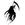

|

Enigmatic Magus
Author of 22 Stories |
Metuo Palam Acerbus By: Taiteki Kagato
Disclaimer and Authors Notes posted at the bottom.
Warning: Graphic scenes of violence and unsettling situations ahead.
Read at your own discretion.
=====================
Akane Tendo looked around her room, attempting to memorize every aspect
of it. Quietly, she reacquainted herself with the overlooked, the under-
used, the plain and ordinary.
Sitting down on her bed, she ran her hand along the comforter, letting
the texture imprint itself in her mind as it had done when it was new,
before years of sleeping under it had rendered the memory inappreciable.
As she moved over to her desk, Akane picked up a photograph of her and
her sisters, in which the three of them were smiling happily before the
camera. Ignoring the blurring of her vision, she reached out to trace
the lines of Kasumi's face, before staring at Nabiki; Nabiki, who would
soon be an only child.
Replacing the photo, Akane left her room to rejoin Ukyo, Nabiki, and
Ranma in the hallway. The three stopped talking when she approached, and
she shuddered as she saw the mixture of fear and sorrow in their eyes.
To them, she was already as good as dead, and the worst thing was, aside
from a sore throat, she didn't feel bad at all. Truth be told, she felt
better than fine; colors were brighter, sounds were richer, everything
was almost too good to be true. When Kasumi had collapsed, then birthed
that "thing," Akane realized just how untrue everything was.
"So, have you decided?" Akane asked flatly.
"God, I can not believe we're having this conversation," Ranma muttered,
echoing everyone else's thoughts on the nightmareish conversation they
knew they were about to have.
Ukyo stared at the floor, while Nabiki kept shifting her gaze from one
spot on the wall to another, never looking anyone in the eye. Closing
her eyes, she cleared her throat, earning her some distance from
everyone else, before whispering softly.
"Please?"
The three shivered at her barely audible plea, and what it represented.
"There's gotta be a way to-" Ukyo started, hopefully. She was cut off
before she could get anywhere.
"-To what? Cut it out? You want to walk into a hospital and explain this
to them? You saw the police officer, Ukyo, you know what they'll do,"
Nabiki snapped.
"Well we can't just give up!" Ranma shouted.
"Maybe we could-" Ukyo said frowning. Again Nabiki cut her off, this
time with a sharp humorless bark of laughter.
"Ha! Using what, your spatulas?"
Ignoring the tears Nabiki had crawling down her cheek, Ukyo scowled
before retorting just as loud, "well we have to do something!"
"Like what?"
"Maybe if we kill it..." Ranma said, quietly.
"You saw what it did to the floor when it died, Ranma," Akane said
quietly.
Ukyo hugged herself, leaning against the wall before summing up, "what a
fucking nightmare."
The hallway fell silent as everyone became somewhat introspective.
Finally, Ranma straightened up, his eyes determined.
"Lets go."
"Go where?" Akane asked, her voice flat.
"To the last place you can remember," Ranma said evenly. Akane started
to protest, before finally shrugging and walking down the hallway. Ukyo
and Nabiki followed the two outside, the cool air still dark as low
hanging clouds threatened the area with rain once again.
"I don't remember where I was, but I remember bits and pieces of... I...
I helped Kasumi through a hole in the school..." Akane said, trailing
off.
"Then what?" Ranma asked, still walking. When Akane didn't answer, he
turned around, only to see Akane panting heavily as she leaned up
against a streetlight. One hand was being used to support her, while the
other covered her sternum. Beads of sweat dotted her forehead, and Ranma
took an involuntary step back, before squashing his fears and moving
towards her.
"Akane, is it...?"
The girl nodded once before collapsing, her eyes pinched shut. Ranma
caught her and lowered her to the ground. Fumbling, her hands shaking,
Akane managed to reach into her pocket and pull something out. Ranma
stepped back as he realized she was holding out the revolver Nabiki had
given her.
"Oh, god Akane, I..." he stammered, the blood pounding in his ears like
war drums. Akane blinked and gazed up at him from the ground, her eyes
watery and pleading. Ranma shuddered, and slowly reached out for the
gun.
"Ra-Ranma... p-p-please..." Akane forced out between ragged breaths and
gasps of pain. She could feel something moving behind her ribs, biting
tentatively at the flesh it could reach. It was like nothing she'd ever
felt before, excruciating and unknown.
Ranma watched her jerk, the tears pouring from her eyes as he took the
pistol and pointed at her. Akane saw Ranma do this as if through a
tunnel of pain that grew longer with each passing second. She was beyond
hearing now, the blood roaring through her ears and drowning everything
else out.
Through red flashes of pain, she saw Ranma, with his eyes closed,
seeming to wordlessly mouth "I'm sorry," before she closed her eyes
against the unbearable pain. Images flashed through her mind rapidly,
her friends, her family, her sisters, and finally, she saw her mother,
smiling, reaching out to embrace her. Akane managed to say "I love you"
one last time, before the world dissolved into painless nothingness.
Ranma jumped as the weapon went off him his hand. Tears cascaded down
his face and the gun fell from numb fingers as he collapsed, a wail of
anguish escaping his lips and rocking Nerima.
Suddenly, Ranma stood, his battle aura bursting into existence around
him. Cupping his hands together, he gathered all the emotions he was
experiencing, and fired it at Akane's twitching body.
"Happa Risai!"
There was a flash of light, and a low, ominous rumble, and Ranma
collapsed again, feeling the cool asphalt underneath his cheek.
"I love you too, Akane..." He whispered.
"MURDERER!" someone screamed from nearby. Peeling one eye open, he
caught sight of a foot moments before his chest exploded in pain, and he
felt himself go airborne.
"Ryouga, no!" Ranma heard Ukyo shout, moments before he landed, the
rough pavement biting into his skin.
Ryouga was beyond listening. He'd rounded a corner on the way to the
Dojo, intent on telling Akane about the weird stuff going on outside
Osaka, when he'd seen something that would haunt him forever: Ranma, a
respected martial artist, using a gun on a pained, crying Akane, moments
before vaporizing her body with a ki-blast. Thought and rationale had
left Ryouga beyond that moment.
Ukyo, who had been holding a crying Nabiki when Ryouga attacked, managed
to get her between the two by then. "Move," Ryouga growled, taking
steady, measured steps towards Ranma. Instead of complying, Ukyo pulled
her battle spatula, falling into a defensive crouch.
"Wait, Ryouga, there's a reason Ranma did that," she implored.
"There is no possible explanation for what he has done. Move, Kuonji."
"Damn it, you idiot, Akane was already dead!"
Ryouga paused, then his scowl deepened, "I saw her crying. I saw the
pain on her face as she cowered under him. I saw her tell him she loved
him, and he shot her." Ryouga had reached Ukyo by then, and the chef
suddenly found herself airborne, her head exploding in pain.
"And you let him kill her!" Ryouga roared, raising his foot to crush the
prone Ranma. Seeing Ryouga swat Ukyo away finally forced Ranma to act.
He may deserve death for what he'd done, but Ukyo hadn't done anything.
Rolling away at the last minute, Ranma heard the pavement buckle under
the force of Ryouga's stomp, moments before shards of asphalt pelted his
backside.
Rolling to his feet before leaping back to put some distance between
Ryouga, Ranma spared Ukyo a glance, in time to see her wipe a spot of
blood from her lips. Turning back to the enraged brawler, the
temperature around Ranma dropped, as he felt the rage boiling within
Ryouga.
With an inarticulate howl of anguish, Ryouga charged, his moves quick
and powerful, forcing Ranma to use more speed than usual to evade them.
Finally reaching the center of the spiral, Ranma's smile died, and he
threw the uppercut. "Hiryuu Shoten Ha!"
Ukyo had run for Nabiki when she realized what Ranma was doing, while
the orphaned Tendo cried softly, unaware of the growing danger. Wrapping
one arm around her, Ukyo grabbed onto the lip of a storm drain as she
heard Ranma shout.
Feeling the winds pick up, Ukyo's grip tightened, but the howl and tug
of Ranma's most devastating attack never came. Cracking her eye open,
Ukyo spied Ranma staring at Ryouga, who'd fallen to his knees before
him.
"Why?" Ryouga asked, staring up at Ranma with a vacant look in his eyes.
Ranma's arms fell limply to his sides, and he stared at the ground. Ukyo
walked up beside him, frowning at Ryouga before she actually saw the
look of despair and anguish on his face.
"..." Ukyo opened her mouth to speak, but nothing she could think of to
say felt right.
"Kasumi and Daddy are dead too," Nabiki said flatly. Ukyo's mouth
snapped shut, and she and Ranma stared at the ground. Ryouga stared at
the remaining Tendo in shock.
"What! But... How?" He finally stammered.
"They... Akane and Kasumi..." Nabiki's voice failed her, and she stared
imploringly at Ranma and Ukyo, incapable of finishing the retelling
herself.
"Akane..." Ranma whispered, his voice surprising Ryouga somewhat out of
his depression. Before he could ask about Ranma's misery, Ukyo started,
her eyes closed and her head turned to the side; unwilling to face or
look at anyone or anything.
"Akane had something inside her... whatever it was, she and Kasumi got
them somewhere, and the one inside Kasumi..." Ukyo, too, felt unable to
continue, and she swallowed audibly before clenching her fist until her
nails bit painfully into her palm.
"It burst out of Kasumi's Chest, and attacked Mr. Tendo, eating his..
eating h- It.. the wound killed him, Ryouga. And Kasumi died.. it was...
I can't..." Ukyo trailed off as tears poured from her eyes, and blood
dripped from her fists.
Ryouga stared at Ukyo, unwilling to believe the story she'd just told,
but disturbed by the way she'd told it. Ranma and Nabiki's grief-
stricken faces and winces as Ukyo's story reached a particularly grisly
part also gave Ryouga pause.
"So why was Akane crying? Why'd you shoot her?" Ryouga demanded,
finally.
"Because she asked me to!" Ranma shouted, before burying his face in his
hands.
"But-"
"The thing was about to pop out of her chest, Ryouga!" Nabiki said, her
voice hysterical. "You weren't there. You didn't see the look on
Kasumi's face... hear her screams.. I... My own sisters... And Daddy
too..." Nabiki collapsed again, the tears resuming their trek down her
face. Ukyo and Ranma both glared at Ryouga, before sitting down beside
the crying orphan.
"Well... What did this thing look like?" Ryouga asked, finally.
"Horrible" Ukyo mumbled, rocking Nabiki as she wept. They sat there for
a moment; Ranma and Ukyo helping Nabiki through the total loss of her
family, while Ryouga watched then in awe.
Ukyo felt Ranma's rocking grind to a halt, and looked over at him, about
to ask why he'd stopped. She realized he'd frozen up, his face draining
of color. Following his gaze, Ukyo too seized up, as she spotted
something taller than most men, and black as crude oil crawling along
the wall of the building across from them, behind Ryouga.
Nabiki, wondering why Ukyo and Ranma had both started shivering on each
side of her, looked up and gasped as she saw the creature slinking
across the wall as if gravity meant nothing to it.
"Ryouga... turn around very slowly" Ukyo said, finally. Ryouga gave them
a quizzical look before he complied, freezing up like the others had
when he spied the obsidian creature.
Its large, tubular head twisted on an impossibly thin neck, both sitting
atop a skeletal torso. Four tube-like bony appendages extended from the
creatures back, and its arms and legs were likewise encased in the
chitinous armored carapace. Extending beyond it was a tail easily as
long as the creature itself, and shaped like a series of gradually
diminishing vertebrae. Ending it was a spade-shaped bladed tip that
glinted dangerously in the dim overcast morning light.
It stopped crawling suddenly, as if sensing their stares. Lifting its
head off the wall, it turned as if to look at them, its eye-less head
glinting ominously in the wan lighting.
"Is this...?" Ryouga managed to say, backing away slowly. Ukyo, Nabiki,
and Ranma stood up slowly, backing away as slowly as Ryouga.
"I don't know. Maybe." Ranma said, pushing Nabiki behind him. Ryouga and
Ukyo flanked him, hoping to protect Nabiki, when the creature opened its
mouth to shriek at them.
The shrill, unearthly sound caused the group to jump as one. Then the
creature sprung at them, impossibly fast, its tail propelling it off the
wall like a compressed spring.
Ryouga and Ukyo leapt to the side, Ranma falling back atop Nabiki to
protect her. He felt something slam down into his chest, hard, and
coughed as the air was knocked out of him. Rolling off a dazed Nabiki,
he stood up, then crouched defensively as the creature spun towards him.
"Hey!" Ukyo shouted, launching one of her spatulas. The creature
scurried back, avoiding the flying blade, as Ukyo pulled her large
spatula from its place at her back. Ryouga had spotted the red of his
umbrella in an alley near where the creature had emerged from, and
hurried over to it while it was occupied. At the last moment Ryouga
realizes something was wrong, and he dove away as a second creature
landed where he'd stood; its tail poised to impale him if he had
remained crouching over his bag.
Leaping back onto the building it had dropped from, the second creature
prepared to spring at Ryouga, before cocking its head to the side, and
scurrying over the building, the tail of the thing disappearing over
the edge almost before Ryouga had time to register it turning around on
the wall.
"Where...?" Ryouga said, keeping his gaze on the buildings bordering the
alley as he removed his umbrella.
"Hey! What are you kids doing out here? There's a curf-" the voice
trailed off as the police officer it belonged to rounded the corner and
saw the creature hissing at Ukyo, "-ew..."
Ukyo's spatula was scratched deeply, the thing's claws digging deep
furrows into the metal rapidly. Finally she got a glancing blow in,
knocking the creature back. The thing opened its mouth, launching a
yellowish fluid at Ukyo, who hid behind her spatula, then dropped it as
a couple droplets of the fluid flew through the gashes and landed on her
arm.
Smoke and vapors rose from the melted spatula, and Ukyo backed away
quickly, squeezing her arm above the acid burns, unable to do anything
other than groan through clenched teeth as she felt the fluid
liquidating the tissue around it.
The officer stared in shock at the fight, pulling his baton and his
walky-talky slowly. Before he could radio for backup, however, he heard
something hard strike the cement behind him. Spinning quickly, he looked
up into a dark mouth, silver teeth opening as viscous gelled drool oozed
around the lethal metallic fangs.
The baton fell from his fingertips as the officer whimpered, and Ryouga,
who had seen the creature descend behind him, screamed for the man to
move. Unable to do anything more than stare up at the metallic teeth, he
watched with dread as they trembled, and suddenly something flashed out-
Ryouga felt bile rise in the back of his throat when he heard the wet
pop of the creature ramming something through the officer's forehead.
Before the body could collapse, the creature grabbed the head, tearing
it from the neck with a sickening wet sound, before probing the hole it
had created almost tentatively with that odd inner-mouth. Realizing it
was eating the man's brains, Ryouga lost it, hunching over as his
breakfast spilled across the street.
Ranma weaved back away from the first creature as it hissed and spat at
him, like some demented caricature of his worst nightmare. He was slowly
leading it away from Nabiki and Ukyo, who were trying to withdraw from
the fight safely. Sparing them a glance, Ranma was knocked off his feet
as the creature's tail came around and slapped against him.
Climbing to his feet, Ranma felt where the tail had impacted; thankful
it had only bruised his ribs and not broken them. The thing may not have
tactics or fight like a martial artist, but its beyond-feral ferocity
and ungodly speed made up for most of what it lacked in overall skill.
Something glinted in the dim lighting, and Ranma spotted one of Ukyo's
throwing spatulas lying in the grass where it had fallen earlier. Making
his way over to it carefully, he scooped it up and let it fly, putting
all his strength into a shot at the creature's chest. It hit with a
satisfying chunk, and Ranma smiled grimly.
His smile faded as he realized it had stuck into the carapace, instead
of traveling through the creature, as it would have on most terrestrial
animals. Moreover, it seemed to be coming loose as Ranma watched.
Still avoiding swiping claws and the occasional tail, the pigtailed
martial artist watched it hit the ground and sizzle, the part that had
been imbedded a bubbling froth of dissolving metal, much like Ukyo's
larger spatula. Yellowish fluid spurted from the wound as if
pressurized, and Ranma realized he'd have to avoid that as well as the
claws and tail now.
Ryouga wiped his mouth swiftly, feeling something rise up behind him.
Glowing a sickly green, he whirled, holding his hands out and screaming
"Shi Shi Hokodan!" into the creature's face. A black and green ball of
Ki grew rapidly between his cupped hands, growing from the size of a
basketball to the size of a medicine ball in the blink of an eye. As its
edges touched the creature, there was a soft fizzle, and the thing's
face, arms, and chest were vaporized leaving the thing's back half to
slump to the ground. Ryouga lowered his aim, and released the blast,
wiping the remains of the abomination from existence.
Ukyo watched Ryouga disappear behind a ball of light, and winced as she
saw his smoking body emerge from the far side of the building his back
had just been up against. The building itself collapse a moment later,
the human projectile adding to the damage the explosion to its side had
caused. Nabiki managed to tie Ukyo's bandolier around the acid burns and
the two of them ran over to Ryouga's battered body, hoping he was okay.
Ranma felt Ryouga's Shi Shi Hokodan go off, and scowled at the creature
before him. Considering how dangerous simply damaging these things in
hand-to-hand was, a Ki blast was about the only thing he could use to
neutralize these things without taking any damage from the beast's
highly acidic blood.
Trying to build up his courage, he grimaced as he realized today had
been too horrific to allow him to harness the emotion necessary for a
Moko Takabisha. Unfortunately, before he could start harvesting the
abundant depression, the creature began a new tactic, pouncing at him
from a crouch like it had from the wall, keeping him on the move, and
unable to power up. Apparently, while not the most intelligent
creatures, it knew not to let him stand still.
"Ukyo! Get Ryouga up! This thing won't let me blast it!"
"He's out cold, Ranchan!" Ukyo cried back, watching her Fiancé dodge the
creature, which was acting like a homicidal cricket at the moment.
Ryouga groaned under her, and she glanced down, frowning at the blood
that trickled from numerous cuts and burns he'd amassed.
Ranma cursed under his breath as he dove out of the path of another
pounce, wincing as the things tail managed to lash out and strike him
again. If Ryouga couldn't, he'd have to resort to the Saotome Secret
Techniques, which would be dangerous with the creature's body chemistry.
Suddenly Ranma felt a buildup of depressive Ki behind him. Apparently,
Ukyo and Nabiki had gotten Ryouga up, and the lost boy was charging
another powerful blast. All he had to do now was lure the beast into it.
Leaping back, his back towards the building blast, the creature pounced
again, and Ranma fell back, giving Ryouga a chance to let fly...
"Shi Shi Hokodan."
Ranma blinked. That was not Ryouga. He was, however, shocked as a beam
of black energy tore through the space he'd occupied moments ago,
vaporizing the creature, and continuing on towards the clouds near the
horizon. The beam flickered then, before shrinking to nothingness, and
Ranma finally rolled over, in time to see Nabiki slump. Her clothes
disintegrated, and Ranma realized she'd managed to pull off the blast
through sheer luck, coming close to destroying herself in the process.
"Nabiki?" Ukyo said, shocked. Ranma rolled over and crawled to his feet,
moving over to Ukyo, who helped him move the two prone bodies away from
the dust and debris of the collapsed building.
Setting Ryouga down beside Nabiki, Ranma stared at the remaining Tendo
curiously. Nabiki might have practiced the art in her youth, but she
showed very little inclination to learning the higher forms of Anything
Goes. What she had done was, to put it bluntly, impossible. Nabiki
coughed then, and looked at Ranma through lit eyelids.
"Why don't you take a picture, Saotome; it'll last longer." She coughed
again, and Ranma frowned as he saw flecks of blood dot her lips.
Suddenly realizing she was also naked, Ranma spun, and Ukyo moved off
towards the destroyed building, returning with a length of cloth she
quickly covered Nabiki with.
"We should move, before any more of those things show up..." Ukyo said,
softly.
"Where?" wheezed Nabiki. Ryouga groaned, and Ranma wished he could throw
some water in the lost boy's face to help bring him back to
consciousness sooner.
"We can go back to my place," Ukyo offered. Ranma looked at Nabiki, who
nodded slowly, and picked Ryouga up, turning towards the Ucchan's.
"Hold it right there!"
Ukyo and Ranma turned, wincing as they stared into the blinding beam of
a flashlight.
Officer Nakahara nodded to himself as he radioed for backup. Another
"incident" and these two were here again, about to leave the area with
two unconscious, battered bodies.
"Set those two down slowly, then raise your hands in the air," he
commanded, his weapon drawn. The two, Ranma Saotome and Ukyo Kuonji,
glanced at each other, then set the two bodies down, lifting their arms
in the air. He scowled as Kuonji failed to raise one arm all the way,
and grinned to himself as he saw the bloodied bandage on her arm.
"So your latest victims fought back, eh?"
"Wha- you think we're the kidnappers?" Ukyo said, incredulously.
"As a matter of fact, I do," Nakahara said calmly as he heard someone
running up behind him.
"Good god! Masanto! They killed him!" someone said. Nakahara scowled at
the two martial artists as another officer came up behind him.
"These two the ones?"
"Yeah. You say they killed Masanto?" Nakahara asked, frowning.
"Ripped his head clean off, looks like. Sick fucks," the new officer
said, aiming his weapon at the two, "Cuff 'em. If they so much as
twitch, I'll pump them full of lead."
"It wasn't us! It was the creatures!" Ukyo cried, as he handcuffed her.
Nakahara rolled his eyes and snorted. "Right," he said, pulling Ranma's
arms behind his back, " So where are they? Sunlight scare them off?"
Ranma groaned as Nakahara harshly patted him down for weapons, grinning
as he practically slapped Ranma's bruised ribs. Ukyo scowled, but said
nothing, silently glaring at the police car as Nakahara moved to search
her. She prepared to lash out if he so much as lingered at any one
point, but he was professional in his search, turning the two around and
ordering them to walk between them towards the station. As they left the
area, three more officers rushed by towards Ryouga and Nabiki.
As she watched Ranma and Ukyo get taken away, Nabiki tried to protest,
but only succeeded in coughing up some more blood. Then a pair of rough
hands touched her throat, feeling for a pulse. "This one's alive! We
need an ambulance!" someone shouted right above her. Her ears rang at
the abuse, and she groaned, the officer above her turning his gaze back
at her.
"You're safe now. Everything's going to be all right. Just stay with
us." Nabiki groaned and nodded, deciding she could help Ranma and Ukyo
soon enough. As darkness engulfed her vision, she heard the officer
holding her began shouting for help, before the world went black.
Nabiki awoke with a shout; feeling an IV in her arm and the cool, steady
flow of oxygen into her nose from a tube taped to her face. Reaching up
to tear the tube away, she looked around, recognizing the hospital room
for what is was, and spotting a police officer watching her from a chair
across the room.
"Bad dreams?" he asked with a smile. She shuddered, not bothering to
answer, and he stood up. "Let me go get the doctor, he told me to get
him when you woke up." Nabiki didn't bother replying, simply staring at
the IV in her arm, before pulling it out with a grimace. She began to
crawl out of the bed, but someone cleared his throat from the doorway,
the sound making her pause before he spoke.
"That, young lady, isn't the wisest of choices. While you may be feeling
somewhat better, you're still quite beat up inside."
Glancing at the doctor with a "don't-patronize-me" glare, she managed to
get her feet on the floor, wobbling slightly as she held the bed until
the earthquake passed.
"I have to get Ranma and Ukyo," she said, closing her eyes as the world
spun around her.
"Your abductors? Rest assured, when this is over, they'll be getting all
the help the medical community can give them," the doctor said, moving
towards her and reaching for his stethoscope.
Nabiki's resulting scowl drove the doctor back a step, and he sighed.
"Have a seat, Miss Tendo, and in a moment, I'll send in the officer
assigned to you. You can tell him everything about your kidnapping." He
quickly checked her over, frowning a little, before turning towards the
door. Nabiki sighed as she realized how much talking she'd have to do to
get Ranma and Ukyo out of there.
"Right. My 'kidnapping.'" Nabiki sneered as she sat back down on her
bed. Then she remembered, "Where's Ryouga?"
"The young man with you? He's still unconscious at the moment. We're not
quite sure when he'll wake up, but it could be any minute." With that,
he left, a female officer in plainclothes entering a moment later and
sitting nearby.
"Feeling a bit better than before, I see. I'm officer Yutani, but you
can call me Konoko."
"Yutani? Like the company?" Nabiki asked. The officer smiled.
"My husband started it." Nabiki nodded. Yutani Corp. was a small
business, but Nabiki had invested in it, liking the way it was laid out,
and had been pleased with the steady growth it had displayed. Shaking
her head to get her thoughts back on track, she looked at the door, then
the officer, before speaking.
"Ranma and Ukyo are innocent. This is a big misunderstanding." Officer
Yutani smiled and scooted closer to Nabiki, taking the younger girls
hands in hers.
"Nabiki, it's okay now. Those two are under strict surveillance, and
can't hurt you or anyone else, any more. You don't have to fear telling
the truth."
"Say what?" Nabiki replied, incredulously. Officer Yutani frowned.
"You don't have to protect them. They are already convicted of killing
officer Sato."
"But the creature did that!" Nabiki said, realizing after she said that
how unbelievable it would probably be.
"Creature," Konoko said, flatly.
"Yes. Ranma and Ukyo... and Ryouga were fighting them... whatever they
were." Nabiki said quietly. Well, she'd started down this path, might as
well stick to it.
"Well, can you describe this 'creature'?" Yutani said, pulling out her
pen and paper.
Nabiki went on to describe the creature the others had fought, until
Konoko held up her hand to signal for her to stop.
"So, two meters, black, bleeds acid, kills indiscriminately..." Nabiki
nodded, glancing at the window.
Yutani sighed, flipping to a fresh page and hoping the rest of the
interview wouldn't continue like this.
Ranma glared at the mirror he knew he was being watched behind, and
briefly considered breaking the weak chains on the handcuffs and jumping
through the glass. It would probably get him killed, but at least he'd
go down fighting. The room he found himself in was sanitary and brightly
lit, a stark contrast to the dull interrogation rooms he'd seen in
movies. Before he could contemplate further, the door swung open, and
three people entered, two in suits, and one officer in uniform.
The first man sat down across from him and smiled.
"Ranma? I'm your court-appointed lawyer, Mr. Kajiura."
Ranma ignored him, still staring at the mirror.
"Detective Kano." The other man in the suit said, frowning at Ranma.
Ranma didn't reply, and the detective sat down with a pen and paper,
flipping through the printed file he'd brought with him for a second
before setting them down and leaning forward to stare Ranma in the eyes.
"Look, son. It's fairly obvious you don't like me, and after what you
did to Masanto, the feeling is entirely mutual. So lets get one thing
straight. You tell me what happened, no bullshit stories about fairy
tale monsters, and we can both leave each other's company as soon as
possible."
"Detective" Kajiura said, warningly. The detective nodded, and sat back.
"Well start with some simple yes/no questions, first, then begin to get
your statement after that. First Question, you are Ranma Saotome, son of
Genma and Nodoka Saotome, correct?"
Ranma refused to answer, still glaring at the mirror. Kano sighed,
realizing it would be another one of those condemning silence-cases,
before starting down the list of questions.
Ranma's gaze never left the glossy reflective surface of the mirror
throughout the interview.
Ukyo Kuonji looked around the cell in disbelief; her Okonomiyaki-sellers
outfit the only comfort in the spartan area. All throughout the
interview, she'd tried to tell the police, her lawyer; anyone who'd
listen about the creatures, but everyone had treated her like she was
insane.
Sitting on the hard bed, Ukyo stared down at the cement floor beneath
her, and wondered what she was going to do now. As her vision blurred,
tears welling up before falling to the floor steadily, she wished she'd
just remained silent throughout the interview. As she'd been lead here,
she could see the angered faces; feel the glares on her back as she was
paraded through the station. She sobbed as she realized how hated she
was by every Officer there, and for doing nothing.
The dead officer, his brains eaten by the beast Ryouga had vaporized,
was on every Officer's mind, and she and Ranma were, in the their eyes,
his killer.
There was a loud clank as the entrance to the holding area opened, and
another Officer escorted Ranma to the cell one left and across from her.
He looked at her, and his angry scowl melted for an instant, before he
turned towards the cell in which he was to be placed, and stepped
inside.
When the guards left, Ranma looked over at Ukyo, and sighed.
The two looked at each other for a moment, before glancing away, unsure
of what to say in their current predicament. Finally, Ranma spoke.
"Sorry for getting you involved in all this, Ucchan."
Ukyo stared at him incredulously, before she began to giggle.
"What's so funny?" Ranma asked, staring at her worriedly.
"I just... You didn't get me involved, sugar. I chose to come along,"
Ukyo said, staring at the ground and growing serious, "Not that I did
much good. In the end, Nabiki was more effective than I was."
"Hey, don't go doubting yourself because of that. Just because you
didn't fight too well doesn't mean you didn't help."
"Gee thanks, Ranma. You sure know how to make a girl feel better."
"Damnit, Ukyo! That's not what I meant. I... What the hell are we going
to DO?"
"Sit here, I think. Eventually those things will take more people, and
the police will realize we're not the kidnappers."
"But, those things are out there, killing people and.. they're doing
that.. whatever they do, too... like... like Akane..."
Ukyo nodded, staring at the floor.
"What about that dead cop, though?" Ranma said, finally. Ukyo shuddered,
looking at Ranma.
"I don't know, Ranchan. Ryouga destroyed the creature that got him, like
Nabiki."
Ranma sighed, " I wish we knew where they come from. We could just tell
the police to go there."
"Well, I think they're from outer space." Ukyo said, looking at Ranma.
"I don't know. Aliens are supposed to be small and gray, with big eyes.
Those things are demons or something."
"Who says aliens are small and gray?" Ukyo asked.
"It's in all the movies!"
"These aren't movie monsters, Ranma."
"You can say that again. After what they did to... Akane..." Ranma
trailed off, his posture slumping again, and Ukyo sighed, watching Ranma
slip back into his depression. Seeing that had a similar effect on her,
and she moved over to the lumpy cot she shared the cell with, and sat
down on it.
"I'm going to sleep, Ranma. We'll talk more later."
"Alright," she heard from the other cell. Turning her back to the world,
Ukyo closed her eyes, ignoring the tears that once again fell freely
from her eyes.
There was a steady beeping noise to his left. Peeling his eyelids back,
Ryouga Hibiki turned in that direction to see an EKG steadily matching
the blood he could feel pulsing through his veins.
Turning to look at the window, he realized he was in a hospital, and it
was dark out, meaning he'd been out for a few minutes, or, more likely,
all day. How had he come to be here? Frowning, he tried to think back to
earlier. He'd been walking through Osaka, when he spotted Ranma and
Akane...
"Ranma!" He growled, sitting up. The room, steady as can be moments ago,
suddenly wobbled around him, and he collapsed back as a wave of nausea
threatened to overtake him.
Trying to remember what had happened afterwards, Ryouga felt his ire
lessen when his memory reasserted itself. The creatures. The Tendo's.
His Shi Shi Hokodan. Looking himself over, he realized firing one off at
point blank range wasn't the smartest of ideas, and decided that, next
time he faced one of those things, he'd try to keep his distance.
So, Akane was... Dead. Staring at the window Again, Ryouga felt bitter
tears of defeat leave salty trails down his cheeks as he remembered all
the times he'd had with her. Then he thought about how she'd died, and
sat up again, fighting off the nausea. Ranma had said something was
inside of her. A baby one of those things...
Feeling bile rise in the back of his throat, he thought about the past
few weeks, and struggled to get out of his bed. He needed to find
Nabiki. And then, he needed to die.
Nabiki watched Konoko Yutani leave with a sigh. It was obvious nobody
believed her story, and wondered how many people it would take telling
the same general story before the police started to believe her. Looking
at the window, she realized the sun had set while she was talking, and
crawled back into bed, hoping Yutani would keep her word and let her see
Ranma and Ukyo soon.
"Nabiki!"
Turning, Nabiki watched Ryouga entered the room, dragging two police
officers behind him. One pistol-whipped him, hoping to drop the crazed
kid, but was surprised when, instead of dropping, the kid turned and
threw him into the wall, hard. The other officer drew his gun, then, and
Ryouga froze. A figure jumped between the weapon and Ryouga, and the
officer frowned as he realized it was the girl he was supposed to be
guarding.
"Move, girl!"
Nabiki scowled, turning to Ryouga, "Lets get out of here."
Ryouga nodded, looking at the hallway, where the officer was trying to
get around Nabiki, who was blocking the doorway, then at the window,
where he could see the tops of streetlights. Nabiki stepped back and to
the side, suddenly, apparently to let the officer inside. Stepping
forward, Nabiki slammed the door on him, hoping the cracking noise
wasn't the officer's nose. Ryouga stared at the door for a moment, then
pushed it shut, throwing the bed up against it.
"Window?" Ryouga asked. Nabiki nodded, and Ryouga used a chair to break
the glass out of the window, while Nabiki looked for a way to open it.
Shrugging, she looked down at the slivers of glass littering the
sidewalk below, and frowned. The officers outside were banging on the
door, yelling to be let in, and the two looked at the door before
locking gazes again.
"You're going to have to carry me."
Ryouga froze up, staring at the open-backed hospital gown Nabiki was
wearing, and feeling his blood pound. Nabiki frowned.
"Damnit, Ryouga! This is no time for modesty! We have to get Ukyo and
Ranma, and stop these things before they get any worse! The longer we
wait, the more people... the more families die." Nabiki sighed, thinking
of her family, then looked at Ryouga, who had regained his composure
somewhat.
"Hold on tight," he said, somewhat nervously, before scooping her up and
jumping out the window moments before the door was kicked open.
=====================
Disclaimer: Rumiko Takahashi owns Ranma ½. The Aliens series is owned by
20th Century Fox. I'd like to thank Rumiko Takahashi and Ridley Scott,
James Cameron, David Fincher, and Jean-Pierre Jeunet for making such
wonderful worlds.
Also, the original Alien Design is credited to H. R. Geiger.
Authors Notes: Whoops. Looks like there's going to have to be a part
three. Some things just don't work out as expected, I suppose. This time
around, with the antagonist already known from chapter one, I chose to
develop the plot somewhat, and put a rather craptastic spotlight on the
remaining heros. Expect to see other familiar faces show up in the next
part...
Oh, and for those readers who aren't uber-Aliens fans, Officer Yutani,
and the paragraph about her husband owning Yutani Corp. Was kind of an
in-joke; Weyland-Yutani is the company in the first three Aliens movies,
and I thought it'd be cute to throw a reference in there like that.
Finally, I must again thank my prereaders, without which I'd be
submitting something... not good. So, thanks again, Nate, Parker, and
Anthony, and also, new prereader WFROSE, who has joined the others.
-Kagato

|
Review this Chapter |